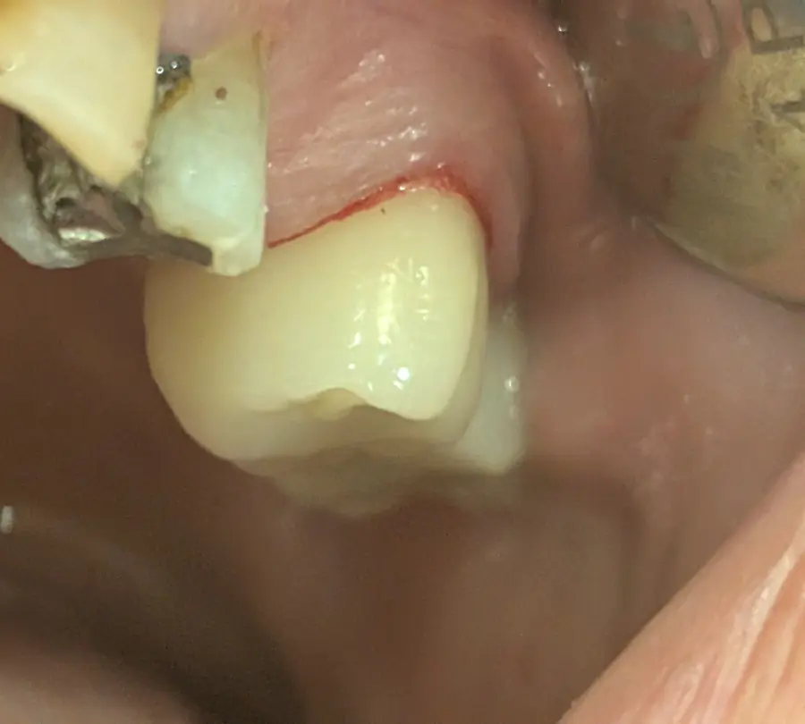

نسخه استخراجشده؛ ترجمه یا تأیید علمی انجام نشده است. وضعیت: captured
بیمار از روکش خلفی تازهاش شکایت دارد: به نظرش بزرگتر از حد طبیعی ساخته شده، دندان برجسته یا حجیم است، یا فرم تاج با دندانهای دیگر هماهنگ نیست. دندان مزیالی این روکش از دست رفته است. روکش را کوچک میکنی؟

در دندانهای خلفی، در شرایط طبیعی بیمار عمدتاً سطح باکال دندان را میبیند. اما وقتی دندان مزیالی از دست رفته باشد، سطح مزیال تاج هم وارد میدان دید میشود. در بسیاری از موارد، مشکل ناشی از افزایش سطح قابل رؤیت است، نه افزایش واقعی حجم تاج.
وقتی دندان مجاور وجود ندارد:
اما اگر پروفایل باکال صحیح باشد و مشکلات فانکشنال وجود نداشته باشد، شکایت بیمار میتواند صرفاً ادراکی باشد.
شناخت این پدیده از تراش یا اصلاح غیرضروری روکش، کاهش بیمورد حجم تاج و آسیب به کانتور فانکشنال جلوگیری میکند.
گاهی مشکل در ترمیم نیست؛ در مرزهای بصری قوس دندانی است. وقتی این مرزها بازسازی شوند، ادراک اندازه هم به حالت طبیعی بازمیگردد.